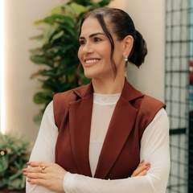

Prévia do feed: reels da semana 04 de novembro
Assista aos vídeos e leia as legendas. Você pode comentar no vídeo ou na legenda e, no fim de cada post, escolher entre aprovar ou enviar pra correção.
Os comentários ainda não estão ligados à planilha. A página funciona só pra visualização por enquanto.

cleniaoliveirarv
804 posts2.760 seguidores621 seguindo
Clênia Oliveira I Desenvolvimento Humano
Performance sustentável para líderes e equipes
⬇️ Entre para Altum
altum.cleniaoliveira.com e mais 1
Assim as capas aparecem no perfil, no recorte 4:5. O mais recente fica no canto superior esquerdo.
Prévia de aprovação preparada pela PADALU. Os vídeos estão em qualidade reduzida só pra visualização.